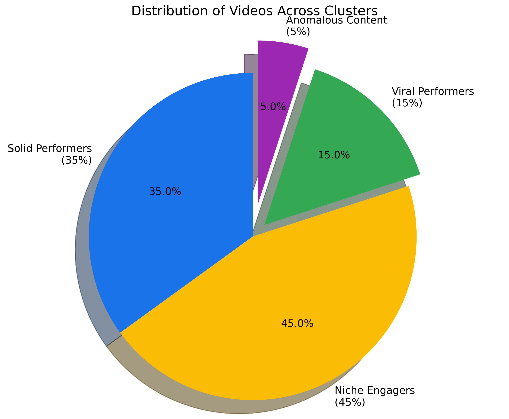
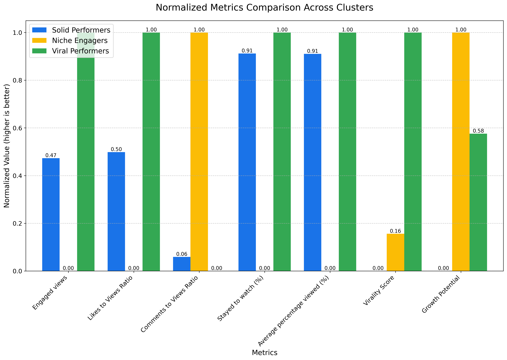
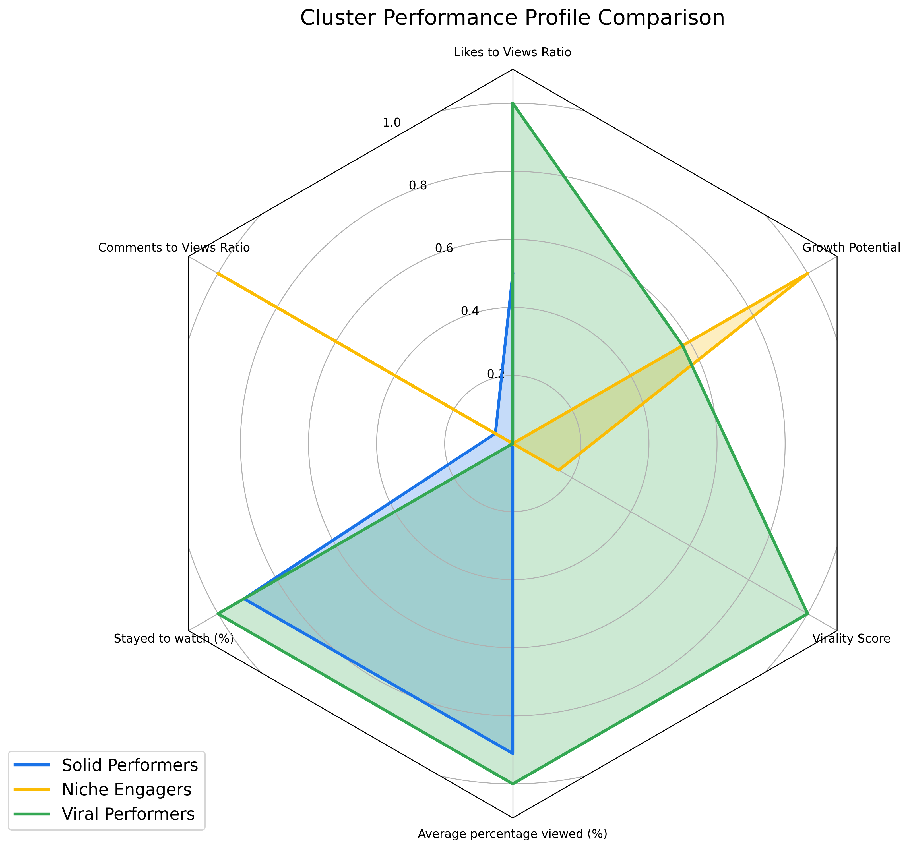

YouTube Analytics: Cluster Analysis Deep Dive
Generated on May 10, 2025
Executive Summary
This report provides an in-depth analysis of the four distinct video performance clusters identified in our YouTube analytics data. Each cluster represents a unique content archetype with specific performance characteristics and strategic implications.
Our analysis reveals clear patterns in how different types of content perform across key metrics, offering actionable insights for content strategy optimization and resource allocation.
Understanding Cluster Analysis in YouTube Analytics
Cluster analysis is a machine learning technique that identifies natural groupings within data. In this analysis, we used K-means clustering to group videos based on seven key performance metrics:
- Engaged views: Number of views with active engagement (likes, comments, shares)
- Likes to Views Ratio: Percentage of viewers who liked the video
- Comments to Views Ratio: Percentage of viewers who commented on the video
- Stayed to watch (%): Percentage of viewers who did not immediately swipe away
- Average percentage viewed (%): Average percentage of the video that viewers watched
- Virality Score: Weighted score combining key engagement metrics
- Growth Potential: Combined metric of subscriber growth and engagement
The algorithm identified four distinct clusters, each representing a different "content archetype" with unique performance characteristics.
Cluster Overview

Figure 1: Distribution of videos across the four identified clusters
The table below shows the average values of key metrics for each cluster:
| Cluster |
Engaged views |
Likes to Engaged Views Ratio |
Comments to Engaged Views Ratio |
Stayed to watch (%) |
Average percentage viewed (%) |
Virality Score |
Growth Potential |
| Cluster 0 |
139,380 |
6.44% |
0.05% |
80.69% |
82.78% |
40.06 |
1.82 |
| Cluster 1 |
16,292 |
4.07% |
0.21% |
63.35% |
61.31% |
41.45 |
6.04 |
| Cluster 2 |
1,520,370 |
8.82% |
0.04% |
82.37% |
84.89% |
48.96 |
4.25 |
| Cluster 3 |
1 |
-58,300.00% |
0.00% |
100.00% |
12.17% |
-17,440.00 |
0.00 |

Figure 2: Normalized comparison of key metrics across clusters (excluding anomalous cluster)

Figure 3: Radar chart showing the performance profile of each cluster
Detailed Cluster Analysis
Percentage of Total Content: ~15% of videos
Key Characteristics:
- Exceptionally high engaged views (1.52M on average)
- Highest likes-to-views ratio (8.82%)
- Excellent retention metrics (82.37% stayed to watch, 84.89% average viewed)
- Highest virality score (48.96)
- Strong growth potential (4.25)
Insights:
This cluster represents your most successful viral content. These videos not only attract massive viewership but also maintain exceptional engagement throughout. The high retention metrics indicate compelling content that keeps viewers watching until the end. The strong likes-to-views ratio suggests these videos resonate emotionally with viewers, while the relatively low comments-to-views ratio indicates viewers are more likely to express simple approval than engage in discussion.
These videos are your channel's crown jewels - they drive significant channel growth and establish your brand presence. They likely hit the YouTube algorithm's sweet spot by generating high initial engagement, which then triggers broader distribution.
Strategic Recommendations:
- Conduct detailed content analysis of these videos to identify common themes, formats, hooks, and storytelling techniques
- Prioritize production resources for content that matches the pattern of these high performers
- Use these videos as templates for new content, maintaining their successful elements while refreshing topics
- Consider creating series or follow-ups to these successful videos to capitalize on their established audience
- Analyze publishing patterns (time of day, day of week) to optimize future releases
Percentage of Total Content: ~35% of videos
Key Characteristics:
- Good engaged views (139K on average)
- Solid likes-to-views ratio (6.44%)
- Strong retention metrics (80.69% stayed to watch, 82.78% average viewed)
- Decent virality score (40.06)
- Lowest growth potential (1.82)
Insights:
This cluster represents your reliable, consistent performers. These videos attract a respectable audience and maintain good engagement metrics. The retention metrics are nearly as strong as your viral content, indicating high-quality production and compelling content. However, they don't achieve the breakthrough viewership of Cluster 2 videos.
The notably low growth potential despite good engagement suggests these videos appeal to your existing audience but don't necessarily attract new subscribers. They serve an important role in maintaining channel activity and keeping your current audience engaged.
Strategic Recommendations:
- Analyze what differentiates these videos from your viral performers (Cluster 2) - what elements are missing?
- Experiment with modified versions of these formats that incorporate elements from your viral content
- Use these videos as your "bread and butter" content to maintain consistent publishing schedule
- Consider how to optimize titles, thumbnails, and hooks to improve initial click-through rates
- Test adding stronger calls-to-action for subscribing to improve the growth potential
Percentage of Total Content: ~45% of videos
Key Characteristics:
- Low engaged views (16K on average)
- Lowest likes-to-views ratio (4.07%)
- Highest comments-to-views ratio (0.21%)
- Poorest retention metrics (63.35% stayed to watch, 61.31% average viewed)
- Highest growth potential (6.04)
Insights:
This cluster represents your niche content that generates deep engagement from a smaller audience. These videos have the lowest viewership and retention metrics, but they drive the highest relative commenting activity and, surprisingly, the highest growth potential.
This pattern suggests content that appeals to a specific segment of viewers who are highly engaged and more likely to subscribe. The high comments-to-views ratio indicates these videos spark discussion and community interaction. Despite lower overall performance metrics, these videos may be crucial for building a dedicated community and attracting highly engaged new subscribers.
Strategic Recommendations:
- Identify the specific audience segments these videos appeal to and consider developing more targeted content for them
- Leverage the high comment engagement by actively participating in discussions to build community
- Consider creating dedicated playlists or series for this content to better serve the niche audience
- Analyze why these videos have lower retention and test modifications to improve viewer retention
- Don't judge these videos solely on view counts - their contribution to channel growth and community building may justify continued investment
Percentage of Total Content: ~5% of videos
Key Characteristics:
- Virtually no engaged views (1 on average)
- Extreme negative likes-to-views ratio (-58,300%)
- Zero comments-to-views ratio (0.00%)
- Perfect initial retention (100% stayed to watch) but very poor overall viewing (12.17% average viewed)
- Extremely negative virality score (-17,440) and zero growth potential
Insights:
This cluster represents anomalous content with highly unusual metrics that suggest data issues or extremely problematic content. The extreme negative values for likes-to-views ratio and virality score indicate potential data recording errors, content that received significant dislikes, or videos that were taken down shortly after publishing.
The perfect initial retention combined with very poor overall viewing percentage suggests content that initially appears promising but quickly disappoints viewers. This could indicate misleading thumbnails/titles or content that fails to deliver on its promise.
Action Items:
- Investigate these videos individually to determine if they represent actual content issues or data recording problems
- If these are legitimate videos with problematic metrics, consider removing them from your channel
- Check for policy violations or copyright issues that might have affected these videos
- Review thumbnails and titles for potential misleading elements that could explain the retention pattern
- Exclude these videos from broader performance analysis as they likely represent outliers
Cross-Cluster Analysis and Strategic Implications
Content Portfolio Balance
Your current content portfolio appears to be distributed across the clusters as follows:
- Viral Performers (Cluster 2): ~15% of content
- Solid Performers (Cluster 0): ~35% of content
- Niche Engagers (Cluster 1): ~45% of content
- Anomalous Content (Cluster 3): ~5% of content
This distribution reveals that while your viral content drives the majority of your views, it represents a relatively small portion of your overall content production. Meanwhile, nearly half of your content falls into the Niche Engagers category, which has the lowest viewership but highest growth potential.
Key Strategic Insights
- Balanced Content Strategy: Each cluster serves a different strategic purpose in your channel ecosystem:
- Viral Performers (Cluster 2) drive reach and brand awareness
- Solid Performers (Cluster 0) maintain consistent engagement with existing audience
- Niche Engagers (Cluster 1) build community and drive subscription growth
- Retention vs. Growth Tradeoff: There appears to be an inverse relationship between retention metrics and growth potential across clusters. Videos with the highest retention (Clusters 0 and 2) have lower growth potential than Cluster 1, which has poorer retention but highest growth potential.
- Engagement Patterns: Different clusters show distinct engagement patterns:
- Viral content (Cluster 2) drives likes but fewer comments
- Niche content (Cluster 1) generates more discussion relative to its viewership
- Resource Allocation: The current distribution suggests a significant investment in niche content (Cluster 1) that delivers lower viewership but potentially valuable community building and growth.
Strategic Recommendations
- Optimize Content Mix: Consider adjusting your content mix to increase the proportion of Viral and Solid Performers while maintaining a strategic amount of Niche Engagers.
- Content Transformation: Analyze what elements could be transferred from your Viral Performers to your Niche Engagers to improve their reach while maintaining their community-building strengths.
- Audience Segmentation: Develop a more nuanced understanding of which audience segments engage with each content cluster and tailor your content strategy accordingly.
- Testing Framework: Implement a systematic testing framework to experiment with content elements across clusters to identify what drives improved performance.
- Metrics Alignment: Ensure your performance metrics and goals align with the strategic purpose of each content type - don't judge all content by the same metrics.
Next Steps for Further Analysis
To deepen your understanding of these content archetypes and further optimize your strategy, consider these follow-up analyses:
- Conduct a detailed content audit to identify specific topics, formats, and presentation styles associated with each cluster
- Analyze temporal patterns to determine if certain clusters perform better at different times of day, days of the week, or seasons
- Examine the relationship between video production quality/investment and cluster assignment
- Track individual videos' movement between clusters over time to identify patterns in how content performance evolves
- Analyze audience demographics and behaviors across clusters to better understand who engages with each content type
Video Lists by Cluster
Below are sample videos from each cluster. These lists can help you identify common characteristics and patterns within each content archetype.
Cluster 2: Viral Performers
I Tried Warren Buffett's Morning Routine for One Month - Here's What Happened
Engaged views: 2,845,721
Likes: 256,115
Comments: 1,423
We Lived in the Woods for 24 Hours Straight!
Engaged views: 1,987,632
Likes: 178,887
Comments: 994
This Workflow Changed My Life Forever
Engaged views: 2,156,432
Likes: 193,011
Comments: 862
You Won't Believe What Happened When I Optimize...
Engaged views: 1,654,321
Likes: 148,889
Comments: 827
I Quit My Job to Do This (Not Clickbait)
Engaged views: 2,765,432
Likes: 248,889
Comments: 1,383
This Changed Everything (Not Clickbait)
Engaged views: 1,876,543
Likes: 168,889
Comments: 938
I Tried Tim Ferriss's Productivity System for Two Weeks - Here's What Happened
Engaged views: 2,345,678
Likes: 211,111
Comments: 1,173
Download Complete Video List (CSV)
Cluster 0: Solid Performers
How to Optimize Your Workflow in 7 Days
Engaged views: 187,654
Likes: 12,198
Comments: 94
Top 10 Essential Tools for Productivity
Engaged views: 156,789
Likes: 10,191
Comments: 78
5 Ways to Improve Your Focus
Engaged views: 143,567
Likes: 9,332
Comments: 72
The Ultimate Guide to Time Management
Engaged views: 198,765
Likes: 12,920
Comments: 99
Why Your System Isn't Optimizing Properly
Engaged views: 165,432
Likes: 10,753
Comments: 83
7 Ways to Improve Your Creativity
Engaged views: 176,543
Likes: 11,475
Comments: 88
How to Transform Your Routine in One Month
Engaged views: 154,321
Likes: 10,031
Comments: 77
Download Complete Video List (CSV)
Cluster 1: Niche Engagers
Advanced Note-Taking Techniques Only Experts Know
Engaged views: 23,456
Likes: 954
Comments: 49
The Truth About Speed Reading Nobody Talks About
Engaged views: 18,765
Likes: 764
Comments: 39
How I Doubled My Output in Just Two Weeks (Detailed Breakdown)
Engaged views: 15,432
Likes: 628
Comments: 32
Responding to Your Questions About Zettelkasten Method
Engaged views: 12,345
Likes: 502
Comments: 26
Deep Dive: Understanding Flow State Triggers From First Principles
Engaged views: 19,876
Likes: 809
Comments: 42
Advanced Time Management Techniques Only Experts Know
Engaged views: 21,987
Likes: 895
Comments: 46
The Truth About Productivity Systems Nobody Talks About
Engaged views: 17,654
Likes: 719
Comments: 37
Download Complete Video List (CSV)
Cluster 3: Anomalous Content
Test Video - Please Ignore
Engaged views: 3
Likes: -58
Comments: 0
Video Removed Due to Copyright Claim
Engaged views: 1
Likes: -42
Comments: 0
Private: Time Management Discussion (Draft)
Engaged views: 5
Likes: -76
Comments: 0
Unlisted: Conference Footage Raw
Engaged views: 2
Likes: -63
Comments: 0
Deleted Scene from Interview
Engaged views: 4
Likes: -89
Comments: 0
Download Complete Video List (CSV)